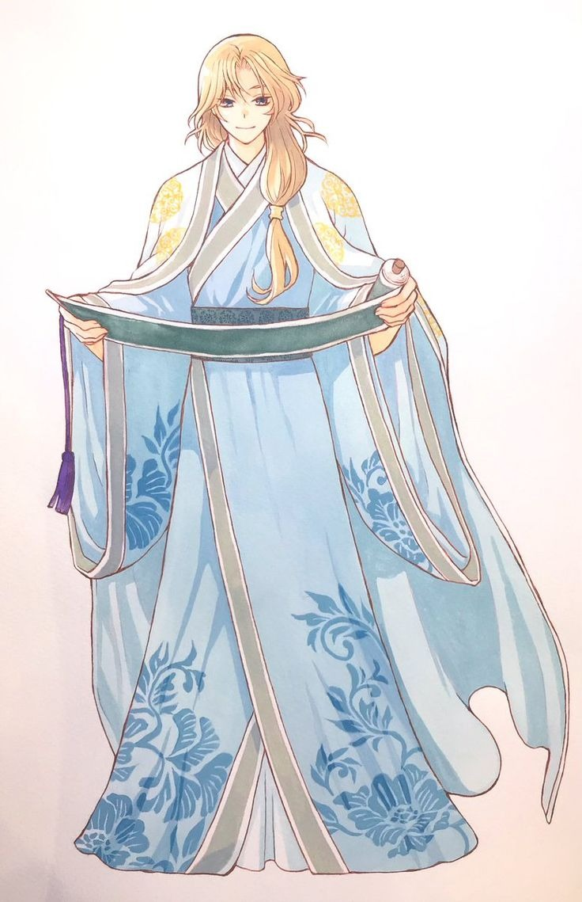

| Kasane Byakuya | the Last Samurai of Fate Byakuya, the near-white line of the Moto; Yukari by her Telling as of the night she walked up out of the cellars under Halcrest with her son inside her coat |
| Epithet | The Last Samurai of Fate. The Hall, which never saw her draw, called her the Red at the King’s Shoulder and thought that was all she was; in the Orrel drainage book she is a number, and no name the clerks would take |
| Concept | She sees where your blow is going to end, and she is already standing there, between you and her king. |
| Stat line | Stage VI Glory · Expert (Faceted), as the Hall entered her Level 170 · Fractured, then Sealed · not on any roll the Hall keeps Body I, Muridic, as the Hall entered her; Path not known · Lenses: home + 1 |
| Combat grammar | Blade; the guard’s school, the body between the king and the blow |
| Aura and sound | near-white with a deep red running under it like lacing under lacquer, the red line kept by the white; released, the red comes up through the white like blood through a bandage and the whole field goes the color of the red harness sound: silk cord drawn tight through iron scales; released, a thousand of them at once |
| How she moves | Half a step ahead of the one she guards and to his left, the right shoulder turned to the room, the blade in its red scabbard and her hand nowhere near it. |
| Stack | not known layers: UNMEI NO SAMURAI while the king stands behind her; AKAZONAE when called |
| Bonded weapon | the guard’s blade of the red chair, left in the white house with the harness |
| Kit | tonight a plain coat with a boy inside it and a gold band in her hair; behind her in the white house, the pale blue robes, a guard’s blade nobody living has seen out of its scabbard but her sister, and the piece people talk about first: the red harness of the Samurai of Fate, Legendary, lacquered red as old blood and laced in white |
| Voice | ”That’s ours. That’s our name. Don’t show it to the clerks.” speaker type: a royal bodyguard of an old sworn house, who stopped speaking his name and kept everything else |
Identity
| Field | Value |
|---|---|
| Full Name | Kasane Byakuya; Kasane Yukari, by the name she took at her Telling and answered to till she died; Kasane Moto, as her son named her at the woodpile |
| Pronunciation | kah-SAH-neh byah-KOO-yah |
| Age | Twenty-six on the cellar night; she died at forty-two |
| Realm / Faction | The Byakuya, the Kōkan king’s own guard; sworn guard to Gimbzo Kōkan Moto; afterwards no house the Orrel clerks would take |
| Family | Kiyome Byakuya, her sister, twelve years younger Hisae Thornwall, her mother’s cousin their grandmother, who taught them both the oath over the lamp Gimbzo Kōkan Moto, her husband, married privately before her grandmother’s lamp with Kiyome the only witness Muken and Yukazuri, her children |
| Refusal | Once she walked out of the cellars she never said his name again |
| Conviction | She thought she could hold him. She loved him the whole way down, through all of it, and she had been dying of him for years before anyone ever killed him |
Soul Architecture
| Field | Value |
|---|---|
| Level | 170 |
| Temperance Stage | VI, Glory · Expert |
| Path | not known |
| Yield (η) | not known |
| Soul Crystal | Faceted, as the Hall reads her Stage |
| Crystal State | Fractured, then Sealed |
| Class | not on any roll the Hall keeps |
| Mastery | Body I, Muridic, as the Hall entered her; the rest not known |
Wellspring Harmonizations
| Wellspring | Folk name | Depth | Got from | What it bends in her | Note |
|---|---|---|---|---|---|
| Fixatio | the Knot | governing | — | holds her where she sets her feet, and holds the blow where it meets her | — |
| Judicium | the Scale | deep | — | ranks every threat in the room, worst first, and marks the one that will reach the king | the Byakuya’s clean line, and the light that shows what is coming |
Stats, Force of Hand and Aether Flow
The rest of the sheet is not known.
Spending tells
| Reserve left | What shows |
|---|---|
| half | the red under her white goes dark as old blood |
| a quarter | the silk-cord sound goes slack |
| a tenth | the white goes out and only the red is left |
Traits
Full accounts: Kasane Byakuya — Abilities
As far as the Hall has read her, every Trait works at Body I.
| Trait | Kind | Source | Path and Form | Gates | What it does | Limit | Tell | Cost | Counter | Numbers |
|---|---|---|---|---|---|---|---|---|---|---|
| THE RED BEFORE THE WHITE | Inherited | — | Path Fate, Walked: a vow, kept on her own share and pulling nothing down · Lens the house’s oath, no Wellspring · Form Bind | none on the card | the Byakuya oath binds her Attraction Layer to the Kōkan king and his children, and aims the whole art at them | The oath’s own: it gave her dominion over the protection of the king and the king’s children, and it had nothing to say when the king himself was the one holding the knife. | Her lips moving over the words of the oath. | — | Make the king the knife. | — |
| UNMEI NO SAMURAI (運命の侍 · the Samurai of Fate) | Primary Trait | — | Path Body · Lens Fixatio · Form Shape | none on the card | wherever the king is, she is half a step ahead of him and to his left, Reflex and Anchoring a step higher on the hidden scale while he stands behind her | It guards from outside; it cannot stand between a man and what is in his own ear. | Where she stands: always half a step ahead of the king and to his left. | Nothing, and in the end everything. | Come at the king from where she cannot stand. | No reserve; Reflex and Anchoring a step higher on the hidden scale while the king stands behind her |
| DOWN THE ROAD (道の先 · Michi no Saki) | Secondary Trait | — | Path Fate, Walked, landing through Spirit (Form Read), read through a Studied Spirit’s eye: a small use; opens no gate · Lens Judicium · Form Read | none on the card | She looks at a road, a man, a marriage or a war and sees where it ends. By the time anyone else understands, she has packed. | It shows her the end of a road and gives her no way to change it, only to step off. | By the time anyone else understands, she has already packed. | No reserve. | A road whose end she cannot see; a road with no end she can see. | not known |
Skills and Abilities
Full accounts: Kasane Byakuya — Abilities
Skills
| Skill | Cues / mechanics | Learned where | Priced by (Sub-Stats) | Rank |
|---|---|---|---|---|
| Reading the road | where a movement, a mood or a year is going to end; the one threat in a room that will reach the king | born with it, and sharpened at the red chair | Forecast, Vigilance, Perception | not known |
| Standing the shoulder | half a step ahead and to the left; never off the line, never behind it; the body kept between | the white house, behind the closed door, and six years of halls | Reflex, Anchoring, Oath | not known |
| The draw | one cut from the red scabbard and back, over before anyone looks | a thousand mornings against her sister | Finesse, Celerity, Penetration | not known |
| Dressing the harness | the order of the pieces, the dense diagonal lacing, lacquer relaid in patches | her grandmother, with the oath and the knot | Finesse, Retention | Expert |
| Court forms | the robes, the silences, where a guard stands when a king sits | the Hall, by standing in it | Empathy, Feint | Journeyman |
Techniques
| Technique | Kind | Mark | Source | Path and Form | Gates | What it does | Limit | Tell | Cost | Counter | Numbers |
|---|---|---|---|---|---|---|---|---|---|---|---|
| HALF A STEP AHEAD | Signature art | — | — | — | — | she sees where your blow is going to end, and she is already standing there, between you and her king | — | — | It only ever puts her ahead of what is coming at someone else: every blow she stops lands on her, and it has no answer at all when the one she guards is holding the knife. | Make the king the knife; or sell her a feint she believes, change your mind in the middle of your own movement, come at him from where she cannot stand, or send more than one body can meet. | Sound: one silk cord drawn tight for the art; a thousand at once under Akazonae |
| THE GUARD’S STEP (先の先 · Sen no Sen) | Bloodline Art, the Byakuya guard | Mastered | Taught | Path Body · Lens Fixatio, aimed by the read · Form Shape | none on the card | she moves before the blow is thrown, and it lands on red lacquer and not on him | It answers only a blow she sees coming; a feint she believes moves her out of the way of the real one. | She is already moving. | About half a per cent of her reserve each time, and nothing she noticed until she had done it a thousand times. | The feint. Before it, show her a blow she will believe; during, there is nothing to be done, since she is already there; after, she is rooted for the length of a breath, and a second blow from another quarter finds her still set. | under Akazonae: free · Sound: the feet setting |
| AKAITO (赤糸 · the Red Thread) | Signature Technique | Mastered | Lived | Path Body: one cut from the scabbard, aimed by the read · Lens Judicium · Form Strike | none on the card | One cut from the scabbard, made at the place you have not reached yet. You arrive, and the blade is already there. | It cuts the end of a road she can see; a man who changes his mind in the middle of his own movement, or does not know himself where he is going, gives her an end that moves. | Her eyes go past you, to where you will be. | About six per cent of her reserve. | A road whose end changes. | Sound: one thin note of steel |
| SHINGAN | Bloodline Faculty, Moto | Drilled | Inherited · the common Moto sight, held low and quiet in her, turned on where the next blow’s weight is gathering | 心眼 · the Moto blood’s eye · no lens · Form Read · it spends her own share and pulls nothing down | — | the heart-eye, turned on where the next blow’s weight is gathering | — | — | — | — | — |
| FŪIN (封印 · the Salt Seal) | — | — | — | Path Body, worked on her own Shell · Lens Fixatio · Form Shape | none on the card | The step taken ahead of a search: three turns of the knot round her own soul and a fourth nobody had tied, and there was nothing left to find. | — | — | Everything she was, at once, for good; it has no clean undoing. | Never an enemy’s to find. It was sixteen years of salt dust in a mortal woman’s throat. | Everything, once; no Mastery read after |
Vows
| Vow | Sworn to or before | Binds and lifts | Stands |
|---|---|---|---|
| The Byakuya oath | over the lamp at nine | — | — |
| to Gimbzo | before her grandmother’s lamp, with Kiyome the only witness | — | — |
| never to be found | to herself, on the third gallery, with the Seal | — | — |
Releases
| Release | Kind | Mark | Source | Path and Form | Gates | What it does | Limit | Tell | Cost | Counter | Numbers |
|---|---|---|---|---|---|---|---|---|---|---|---|
| ”Mae.” (前, “Before”; AKAZONAE, 赤備え, the Red Harness) | First Release, called “Mae” | — | — | Path Body: the flesh and the blow transformed · Lens Fixatio · the Primary Trait let off its limit | — | One quiet word, and the red comes up through her white like blood through a bandage. For four minutes nothing she steps in front of costs her anything. | — | — | Four minutes from full; afterwards the red stays in her face for a day. | Time. | Reflex, Anchoring and Celerity a step high on the hidden scale |
Physical Description
| Feature | Description |
|---|---|
| Hair, skin and eyes | She was fair, and her hair was the Byakuya gold, the same as her sister’s, long and loose to the waist with the length of it gathered over one shoulder in a low tail bound with a gold band; her eyes were a clear blue, steady, and seemed to be looking at something a long way down the road. |
| Face | She had a calm face and a small smile that came easily and went deep, and she tied her hair back on the training ground the same way her son ties his. |
| Court dress | At court she wore the long robes of her house, pale blue silk worked with dark blue peonies and edged in gray and white, with gold embroidery at the shoulders and a dark sash at the waist. |
| At the king’s side | At the king’s side, the red harness of the Samurai of Fate, lamellar lacquered red as old blood and laced in white silk, which she wore six years and left in the white house in the Shiraki hills the night she went into the salt. |
| In the Cuttings | In the Cuttings she wore whatever a salt-cutter wears, and no name, and no light. |
Voice
| Field | Value |
|---|---|
| Speaker type | a royal bodyguard of an old sworn house |
| Notices first | where the knife will come from |
| Sentence length | short, quiet, certain |
| Contractions | sometimes |
| Never says | his name, after the cellars; what she was, ever |
| Grief shift | she turns her face to the wall |
| Sample line | ”That’s ours. That’s our name. Don’t show it to the clerks.” |
Equipment
| Item | What it is | Grade | Rarity | Rung | Bonded |
|---|---|---|---|---|---|
| The red harness of the Samurai of Fate | lamellar cuirass, shoulder-guards, skirts and throat-guard, lacquered red as old blood and laced in white silk | A | Legendary | Fieldwinner | no |
| The guard’s blade of the red chair | a long single-edged blade in a red scabbard | A | Rare | Fieldwinner | yes |
| The court robes | long robes of pale blue silk worked with dark blue peonies | plain | Rare | — | — |
| The roll of the guard | a long hand-scroll backed in dark green silk | plain | Rare | — | — |
| The seal-token | her guard’s token, humming on a cord | E | Uncommon | Sidearm | no |
| The coat and the band | a plain dark wool coat and a narrow gold band | plain | Common, except the band, which is Uncommon | — | — |
| Item | Look | Maker’s mark | Wear and repairs | What people say | How shown off | Stamp | Other |
|---|---|---|---|---|---|---|---|
| The red harness of the Samurai of Fate | small iron scales under coat on coat of lacquer, red for the red line and white for the white that kept it; older than the Seat’s oldest records in its pieces, relaced by every Byakuya who wore it | — | the lacquer is relaid in patches at the breast and the right shoulder, the side she kept toward the room, and the back of it has never needed touching, because in six years nothing got behind her | children’s stories, and the last of them; Karogane saw her once in it and has said she looked better in it than anyone since | half a step ahead of the king and to his left, in every hall he walked into | stamp Hallowed | what it is: lamellar cuirass, shoulder-guards, skirts and throat-guard, lacquered red as old blood and laced in white silk in the dense Byakuya diagonal |
| The guard’s blade of the red chair | plain gray-bright steel in a dull red lacquer scabbard with white cord at the mouth; one thumb’s worth of wear at the scabbard’s lip and none anywhere else that anyone can see | proof-mark the Kōkan mark, small, under the grip | — | the Hall has no opinion of it, which is the idea: the guard of the red chair is meant to be looked at, and the sword is meant to be over before anyone looks | not once; the Hall has never seen it out, and her sister has seen it a thousand mornings | stamp Hallowed | about a kilogram and a quarter, a long arm’s length, balanced a hand before the guard with AKAITO it beats Instrument plate and fails against Storied plate left in the white house with the harness |
| The court robes | the peonies are resist-dyed, the gold roundels laid on after; the line’s near-white has gone a long way toward blue, and the Byakuya elders have had words about it | — | she wore them the way she wore everything, as if she might have to run in them; one sleeve has a tear near the hem she has mended herself and badly | — | — | — | what it is: long robes of pale blue silk worked with dark blue peonies, edged in gray and white, gold embroidery at the shoulders, a dark patterned sash, long trailing sleeves |
| The roll of the guard | her name is the last on it, and under her name is a blank line her grandmother ruled and nobody has filled | — | — | — | — | — | what it is: a long hand-scroll backed in dark green silk with a dark purple tassel, every Samurai of Fate entered by name and the oath at its head left in the white house with the harness |
| The seal-token | a thumb of dark iron with the Byakuya owl on it | — | — | — | — | stamp Marked | a thing that hums can be heard, and she drops it down a dead shaft in the Orrel Cuttings before she has been there a week |
| The coat and the band | this is the whole of what she takes, and she packed it some time ago | — | — | — | — | — | what it is: a plain dark wool coat big enough to hold a sleeping boy against her, a narrow gold band at the tail of her hair, and whatever a salt-cutter wears after that the band goes for bread in the first winter |
Lore
Full account: Kasane Byakuya — Lore
Ties
| Person | Who they are to her |
|---|---|
| Muken Moto | her son, who keeps her memory and not his father’s |
| Yukazuri Moto | her daughter |
| Gimbzo Kōkan Moto | her king and husband |
| Kiyome Byakuya | her sister |
| Yusif Stark | who kept her and the boy safe |
| Shigure Tenrai | who stood at the same king’s side twenty years and loved him too |
| Sumie Kurenai | who signed for the closed book |